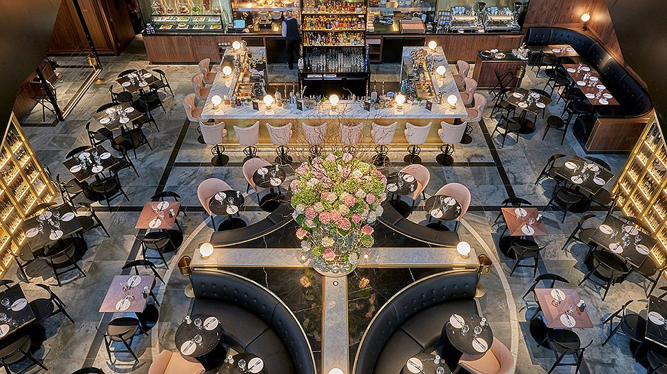

Цей звіт описує розробку веб-застосунку для онлайн-замовлення у ресторані. Застосунок дозволяє користувачам здійснювати замовлення страв, вибирати способи оплати та доставки, а також переглядати меню. Адміністратори можуть оновлювати меню та статуси замовлень через панель адміністратора.
Тема ЛР №1.1: "Розробка онлайн-замовлення для ресторану"
Мета ЛР №1.1: Створити веб-застосунок для онлайн-замовлення страв, включаючи функції реєстрації користувача, оформлення замовлення, вибору способу доставки та оплати.
Місце розташування WEB-застосунка: Проєкт знаходиться в репозиторії GitHub. Для подальшої роботи репозиторій можна клониувати на комп'ютер, а також переглядати через хостинг.
Меню містить категорії страв та їх описи. Кожна страва має можливість бути доданою до корзини для замовлення.
| Категорія страв | Назва страви | Опис | Ціна |
|---|---|---|---|
| Основні страви | Піца Маргарита | Сир, томатний соус, базилік | 150 грн |
| Десерти | Торт "Наполеон" | Класичний торт з кремом | 120 грн |
| Напої | Кава Еспресо | Сильна, ароматна кава | 40 грн |
| Перші страви | Суп борщ | Традиційний український борщ | 70 грн |
Для створення таблиць в HTML використовуються теги <table>, <tr>, <th> та <td>. Тег <thead> дозволяє групувати заголовки таблиці, а тег <tbody> - дані таблиці.
Приклад зображення ресторану:
Тег <img> використовується для вставки зображень. Атрибут src вказує шлях до зображення, а атрибут alt дає текстову альтернативу для зображення, яка з'являється, якщо зображення не завантажено.
На головній сторінці можна переглядати список страв, а також додавати їх до корзини.
Ненумеровані списки (<ul>) використовуються для вказівки категорій або елементів без порядку, а нумеровані списки (<ol>) для кроків або елементів у порядку.
Виконано лабораторну роботу по створенню онлайн-замовлення для ресторану. Створено веб-застосунок для перегляду меню, додавання страв до корзини та оформлення замовлення. Окремо розглянуто використання таблиць, зображень та списків в HTML.